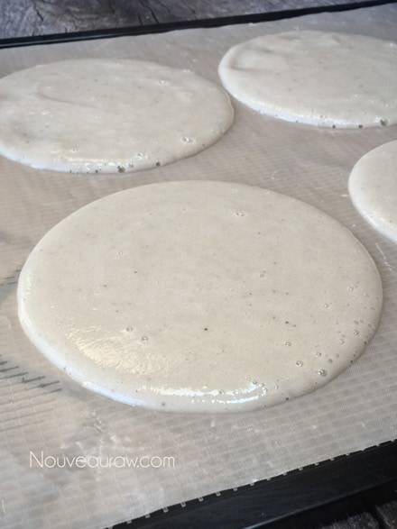
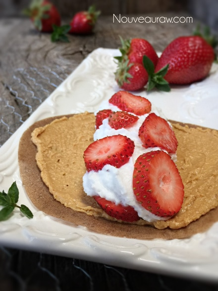

Homemade Strawberry Banana Crepes

~ raw, vegan, gluten-free, nut-free ~
For those of you have been following me throughout the years, you have come to learn that I love learning how foods grow and how they are harvested. There really isn’t a better way to be connected to the foods that we love and eat.
I while back I watch a documentary on T.V. that was all about bananas. After the show, I wanted to run right out and plant a few banana trees in our orchard… but darn, we are not zoned for them. Hehe, I am sure that you have all seen pictures of banana trees and how they grow in clusters. Just one large cluster on a banana tree can weigh over 100 pounds, with up to 400 individual bananas per cluster! Now come on, just that just give you the chills? :)
Banana trees are not trees!
Crazy huh? Bananas “trees” are actually the world’s tallest herbaceous plant. They can reach 20 feet in height. “Herbaceous” means there is no woody stem and all the plant matter above the ground dies at the end of a yearly cycle.
Banana trees grow from an underground root system called a corm, which can last for many years. Each corm sends up one or more shoots, which develop large leaves. The thick stalks of these leaves wrap around each other and thicken into the trunk of the banana “tree.” A central stem comes up through the leaf stalks and develops the banana “heart,” which is a structure that includes multiple small flowers, each of which has an ovary that develops into a banana.
Once the bananas have ripened, the entire plant dies back to the ground, and the corm sends up a new shoot. Even though a banana plant can get to be over 7.5 meters tall (25 feet), it only lasts about a year or so. And the interior of it is not a structure of dead cells as with wood. So a banana “tree” is not technically a woody tree. (source)
It’s no wonder that I love bananas. I enjoy them fresh, dehydrated into banana chips, frozen for smoothies and also in the form of banana wraps crepes. Crepes sound so much more… sophisticated.
Banana crepes are so darn easy and last forever. These crepes can appeal to all ages… from kiddos who love to eat them like a fruit leather to adults who can stuff them full of excellent ingredients. Personally, I love slathering peanut butter on them and then rolling them into a tube. Oh so delicious.For this dessert, I started off by spreading a thick layer of peanut butter on the crepe. I followed it with a hefty dose of Coconut Whipped Cream and then layered in sliced strawberries. Umm, umm, good.
I originally created this recipe post on Nov. 2010 at 1:32 pm to be exact lol… but today I gave it a “face lift” since I had to make them for dessert tonight. Enjoy the simple things in life! amie sue
Crepes:
Filling:
- Nut butter
- Coconut Whipped Cream
- Fresh Berries
Preparation:
- Place bananas in a food processor or blender and blend until smooth.
- Pour the banana batter onto the teflex sheet that comes with the dehydrator.
- Spread about 1/8- inch thick.
- You can create any size circles that you want or one large sheet that can be cut into square shapes once dried.
- Dehydrate at 115 degrees (F) for 14 hours or less.
- Begin checking the bananas a few hours before to make sure they are formed, pliable, and solid in texture, but not letting the edges get crispy.
- Bananas don’t dry hard, they usually always remain pliable.
- Eat as is or create a wonderful crepe-like dessert that can be filled endless ingredients.
- Wrap the banana crepes individually with plastic wrap and store in a zip-lock bag. They can literally last up to a year.


© AmieSue.com